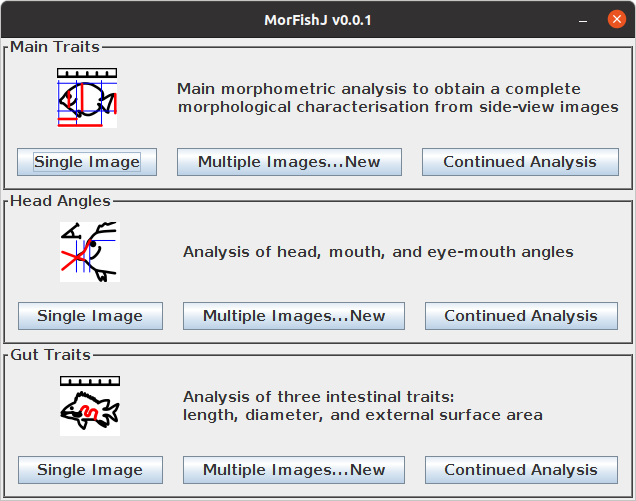

1 Installation
ImageJ is an open source image processing program commonly used by researchers to extract morphometric data from fish images. As such, MorFishJ has been developed as an extension of this software and it can be used in both ImageJ 1.x and Fiji (ImageJ2) distribution.
Therefore, the installation of ImageJ (https://imagej.nih.gov/ij/download.html) or Fiji (https://imagej.net/software/fiji/downloads) is required before installing MorFishJ.
MorFishJ depends on ImageJ 1.53e, thus, if ImageJ/Fiji was previously installed, first check the current ImageJ version below the toolbar. If it is older than 1.53e, to update ImageJ click Help –> Update ImageJ…, choose the latest version and click OK. Then ImageJ/Fiji must be restarted.
Once ImageJ/Fiji is installed/updated, proceed with installing MorFishJ following these steps:
- Download
MorFishJ:- for people familiar with GitHub: clone or download the entire GitHub repository;
- for people not familiar with GitHub: click here to go to the project’s main page on GitHub, click on the green button
Code, then click onDownload ZIP, thus extract the content.
- for people familiar with GitHub: clone or download the entire GitHub repository;
- Copy the
MorFishJ v0.0.1folder in theImageJ/plugins/orFiji.app/plugins/directory.
Now MorFishJ is installed. Open ImageJ/FIJI and click Plugins –> MorFishJ v0.0.1 –> MorFishJ GUI. The following GUI appears in the upper left corner of the screen.

In Fiji the Plugins menu is often crowded, thus it may be easier to use the Search field under the toolbar to find and start MorFishJ.